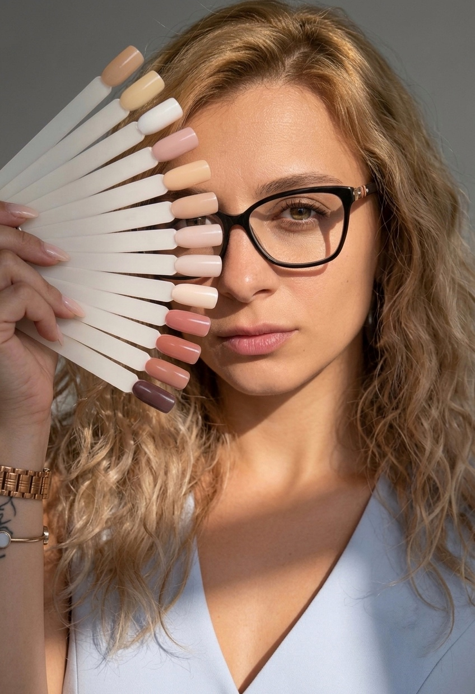

Nuestros Trabajos


Esterilización 100%, técnica ucraniana y un espacio de confianza sin prisas.

Llevo más de 15 años dedicada al mundo de belleza. En todo este tiempo, mi prioridad siempre ha sido la misma: ofrecerte un espacio de confianza, con la máxima calidad y los mejores cuidados para potenciar tu belleza natural.
Para mí, un salón de belleza no es solo un lugar donde venimos a arreglarnos, sino un refugio para consentirnos, mimarnos y salir con la autoestima por las nubes.
Técnica avanzada de manicura combinada/rusa para un acabado ultra limpio, cutículas perfectas y durabilidad de hasta 4 semanas.
Cuidado profesional de pies con aparatología y cosmética de alta calidad para suavidad y salud duradera.
Diseño de cejas, corrección profesional, laminado y coloración para enmarcar tu mirada de forma natural.
Curvatura elegante, nutrición con keratina y tinte para realzar tus pestañas naturales sin dañarlas.
Amplia paleta de colores, refuerzo de base y construcciones impecables con materiales seguros.
Retirada cuidadosa de material anterior y tratamientos de fortalecimiento y nutrición profunda.
📍 C/ Bonavista 75
Sant Just Desvern
Reserva tu cita en línea a través de Treatwell o contáctanos por WhatsApp para cualquier consulta.
📍 C/ Ramoneda 75
Cornellà de Llobregat
Reserva tu cita en línea a través de Treatwell o contáctanos por WhatsApp para cualquier consulta.